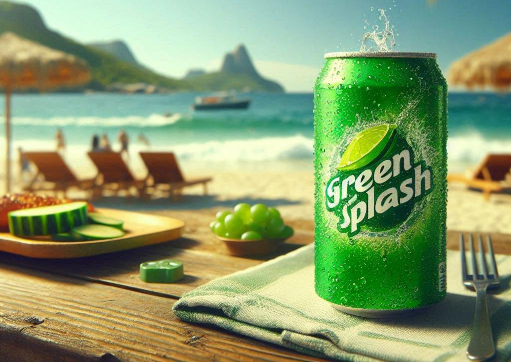
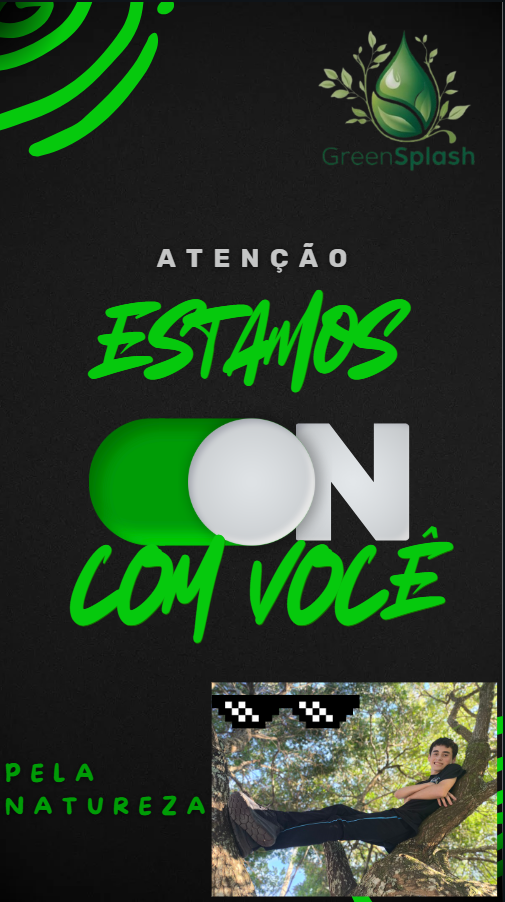

A importância da cor verde no nosso design
Verde transmite equilíbrio, renovação e tranquilidade. É associado à natureza e ao bem-estar.

Aplicando verde com estratégia
Misturando tons claros e escuros para criar contraste, podemos trazer um verde refrescante e um verde natural.
Aplicações Práticas do verde
O verde funciona bem em sites de saúde e bem-estar, transmitindo confiança e cuidado.
Em interfaces digitais, cria uma experiência acolhedora e fluida.

